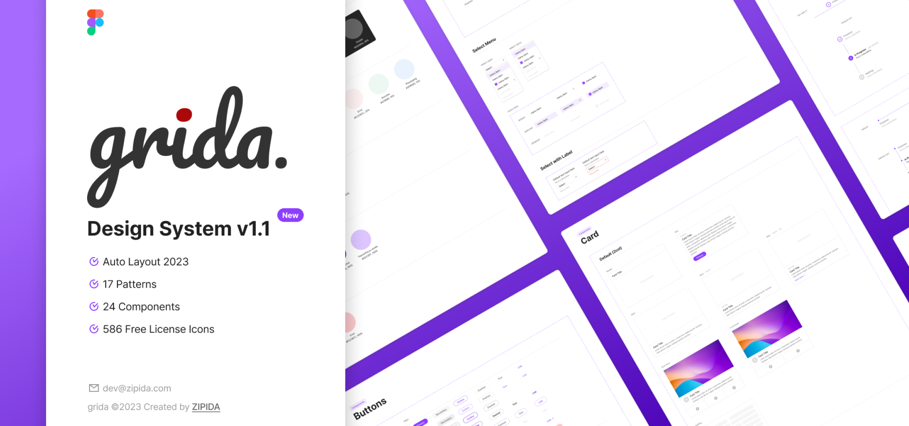
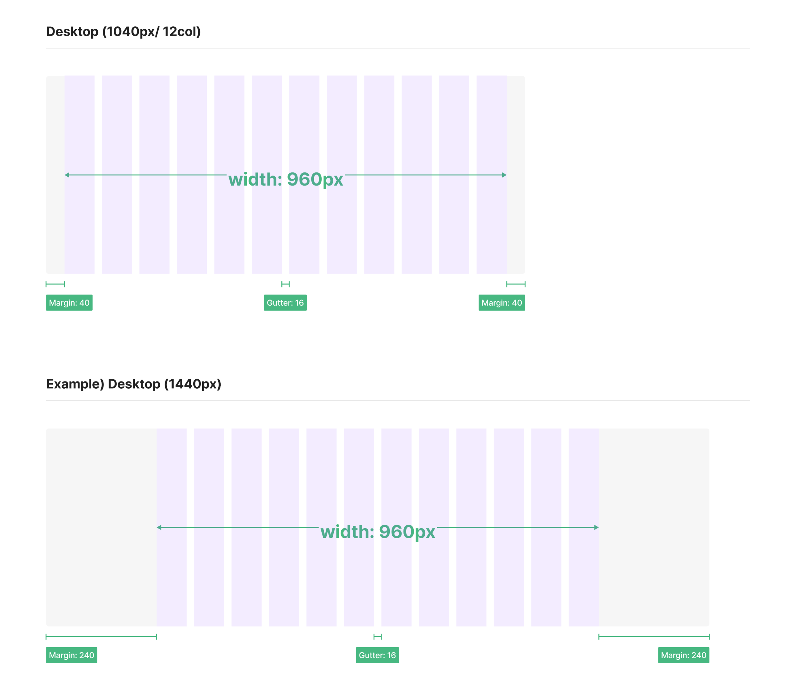
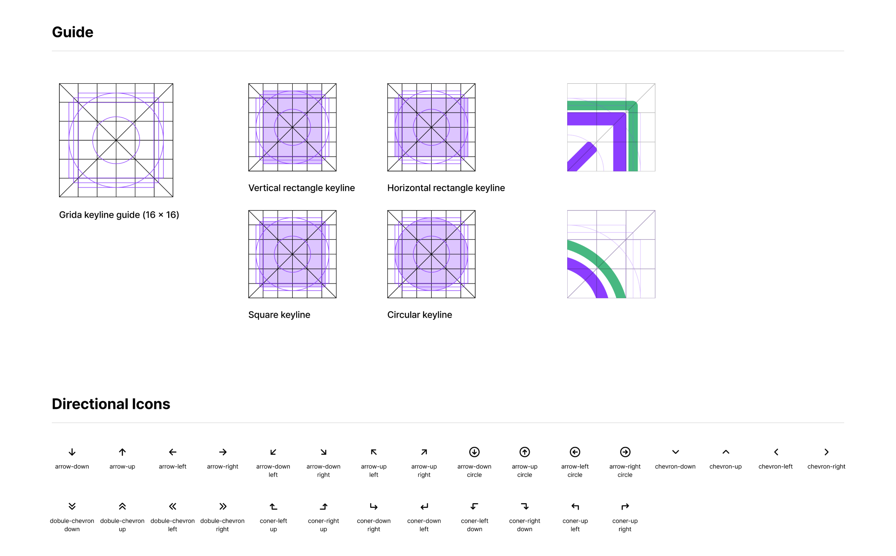
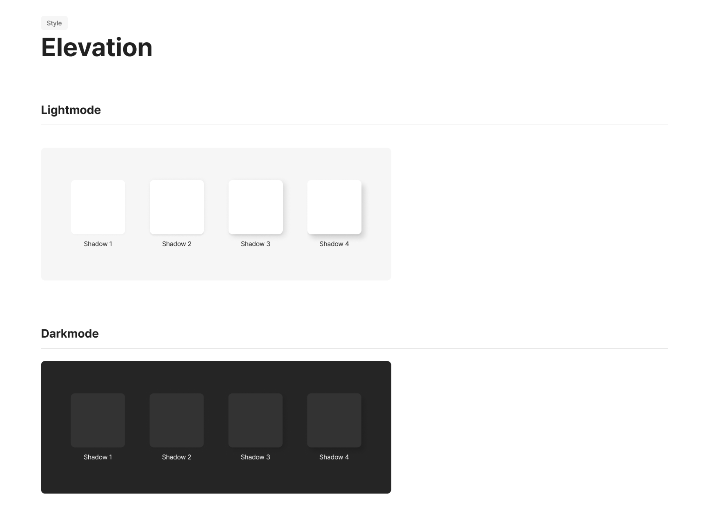
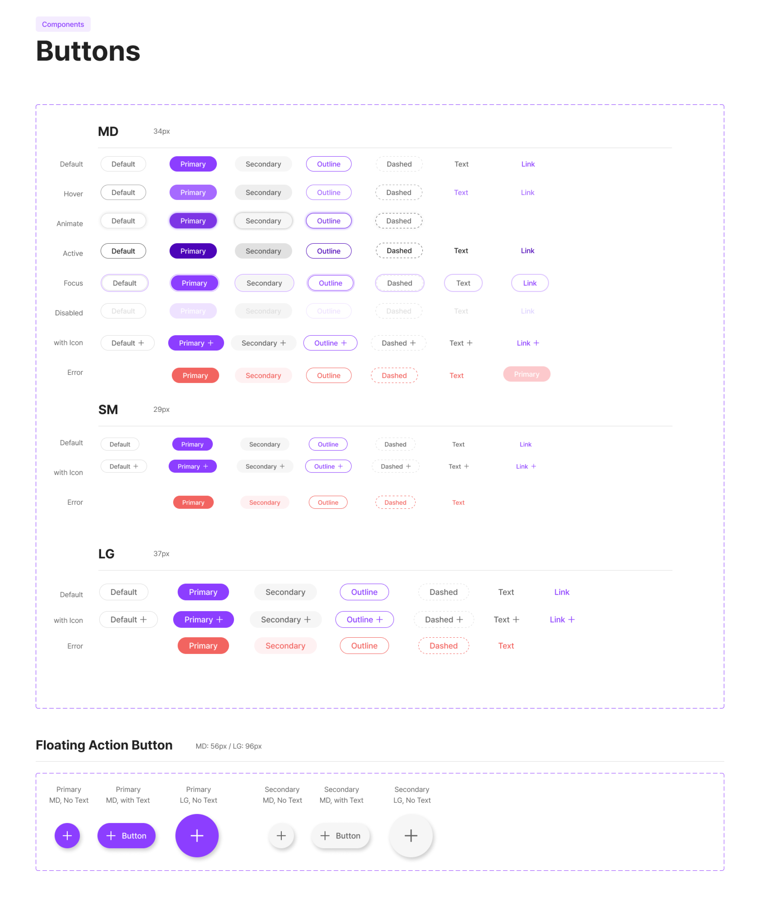
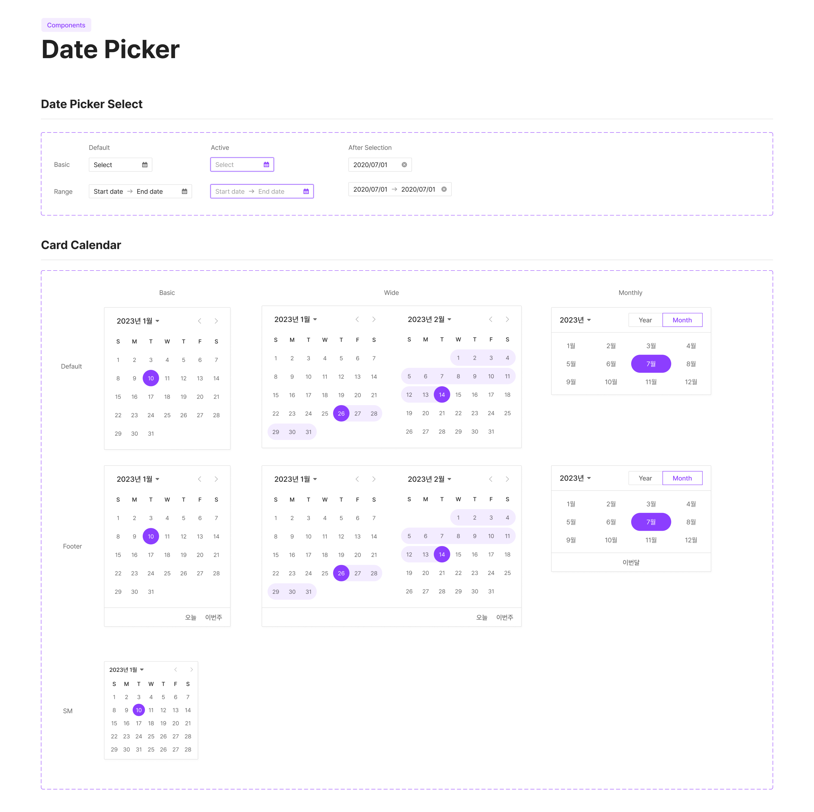

<!DOCTYPE html>
<html>
    <head>
        <meta charset="utf-8" />
        <meta name="viewport" content="width=device-width, initial-scale=1">
        <title>Design System</title>
        <link rel="stylesheet" type="text/css" href="./css/styles.css">
        <link rel="preconnect" href="https://fonts.googleapis.com">
        <link rel="preconnect" href="https://fonts.googleapis.com">
        <link rel="preconnect" href="https://fonts.gstatic.com" crossorigin>
        <link href="https://fonts.googleapis.com/css2?family=Courier+Prime:ital,wght@0,400;0,700;1,400;1,700&family=Montserrat:ital,wght@0,100..900;1,100..900&display=swap" rel="stylesheet">
        <link rel="icon" type="image/png" href="dy_favicon.png">
    </head>
</html>
<body>
    <div class="mode-toggle">
        <button id="darkModeToggle">
            
        </button>
    </div>
    <header>
        <div class="language-selector">
            <a href="#" class="active">KR</a>
            <div class="lang-divider"></div>
            <a href="en/sub_grida_en.html">EN</a>
            <div class="lang-divider"></div>
            <a href="cn/sub_grida_cn.html">CN</a>
        </div>
    </header>
    <div class="sub-contents">
        <a href="index_kr.html">&lt; Back to Home</a>
        
        <div class="sub-contents-text">
            <div class="sub-text-title">Overview</div>
            <div class="sub-text-p">
                Grida는 ZiPIDA 회사의 개발팀은 자사의 제품과 솔루션에 통일성과 전문성을 위해서 디자인팀에서 자체적으로 구축한 디자인 시스템입니다. 이 시스템으로 각 상품과 솔루션이 하나의 일관된 브랜드 경험을 제공할 수 있도록 세심하게 기획하고 설계하였고 시스템은 피그마 커뮤니티에 오픈 소스로 공개되었으며, 이를 통해 현재 900명이 넘는 사용자에게 공유되고 있습니다. 이러한 공개로 커뮤니티의 다양한 피드백과 개선점을 수용하며, 보다 완성도 높은 디자인 시스템으로 발전할 기회를 얻고 있습니다. 
                <br/><br/>
                특히, 회사는 추후에 진행될 페이지 개발에도 이 디자인 시스템을 적극적으로 활용할 예정입니다. 이를 통해 회사는 다양한 상품과 솔루션에 일관된 사용자 경험을 제공함과 동시에, 효율적인 개발 프로세스를 구축할 수 있을 것으로 기대하고 있습니다. 
                <br/><br/>
                Primary Colour로 보라색을 선택함으로써 다른 디자인 시스템과의 차별화를 두었고 색상 선택으로 디자인에 독특한 개성을 부여하며, 제품의 시각적 정체성을 강화하는 데 기여하려 하였습니다. 이러한 전략을 통해 이용자들에게 독보적인 브랜드 경험을 제공하고자 합니다.            
            </div>
        </div>
                
        
        
        
        
        <div class="sub-contents-text">
            <div class="sub-text-title">Link</div>
            <div class="sub-text-p">
                    <a href="https://www.figma.com/community/file/1214491717485403531/grida-design-system-v1-1">https://www.figma.com/community/file/1214491717485403531/grida-design-system-v1-1</a>
            </div>
        </div>
    <footer>
        <p>&copy; 2024 Dayeong Kim. All rights reserved.</p>
    </footer>

    <script src="./js/scripts.js"></script>
</body>